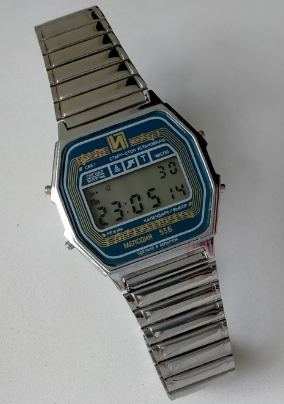

|
Pauline's Anniversary Necklace Marleina's Earrings Halloween Helmet Christmas Bauble Expensive Prototype Watch Odd Sunglasses Child's Ragamuffin Ski Statuette Hatsune's Doll |
|
Expensive Prototype WatchThis prototype watch was supposedly built by the Rolex company in an early attempt to capitalize on digital watch faces. It bears little resemblance to the classic Rolexes known and loved by watch aficionados worldwide, and the idea seemed to have been abandoned early on. Jack acquired this prototype via an anonymous donor who claimed to have previously worked for Rolex during the time this was built. The donor claimed that the watch was a gift from one of the people actually involved with the project. According to the donor, the “N” logo was originally meant to belong to a subsidiary company, as Rolex themselves were reluctant to launch the product based solely on their reputation as analog watch crafters. Eventually, the model was scrapped late in development, leaving Jack as one of around a dozen people to own a constructed prototype. The watch held the same prestige as a typical Rolex, and was expected to market somewhere in the 1000-2000$ range. |
|
Framed Cat Photograph Classic Digital Camera Beer Painting Embroidered View Tangle Fidget |